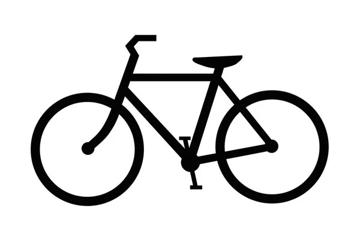

The following case study is part of Google's Data Analytics Capstone. Although the case study was provided by Google all of the work shown is my own.
In this case study, I am a junior data analyst working in the marketing analyst team for Cyclistic, a bike share company in Chicago. Cyclistic's bike-share program features 5,800 bicycles and 600 docking stations. Their pricing plans are single-ride, full-day pass, and annual memberships. Casual riders includes customers who purchase single-ride or full-day passes and Cyclistic members are customers with annual memberships. Liliy Moreno, the director of marketing, wants to maximize the number of annual memberships.

As part of the marketing analyst team, it is my responsibilty to find how annual members and casual riders use Cyclistic different.
I downloaded Cyclistic's historical trip data for the past 12 months from here and saved it to a local folder named "Historical_trip_data". The files are organized by year and then by date.
Since Cyclstic is a fictional company we are using data that has been made available by Motivate Internationl Inc. under this license
The data is non-biased and credible. The data is reliable, original, comprehensive, current, and cited.
Each of the 12 files includes a table with